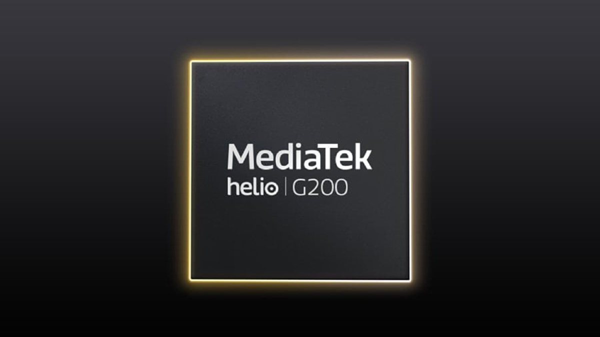
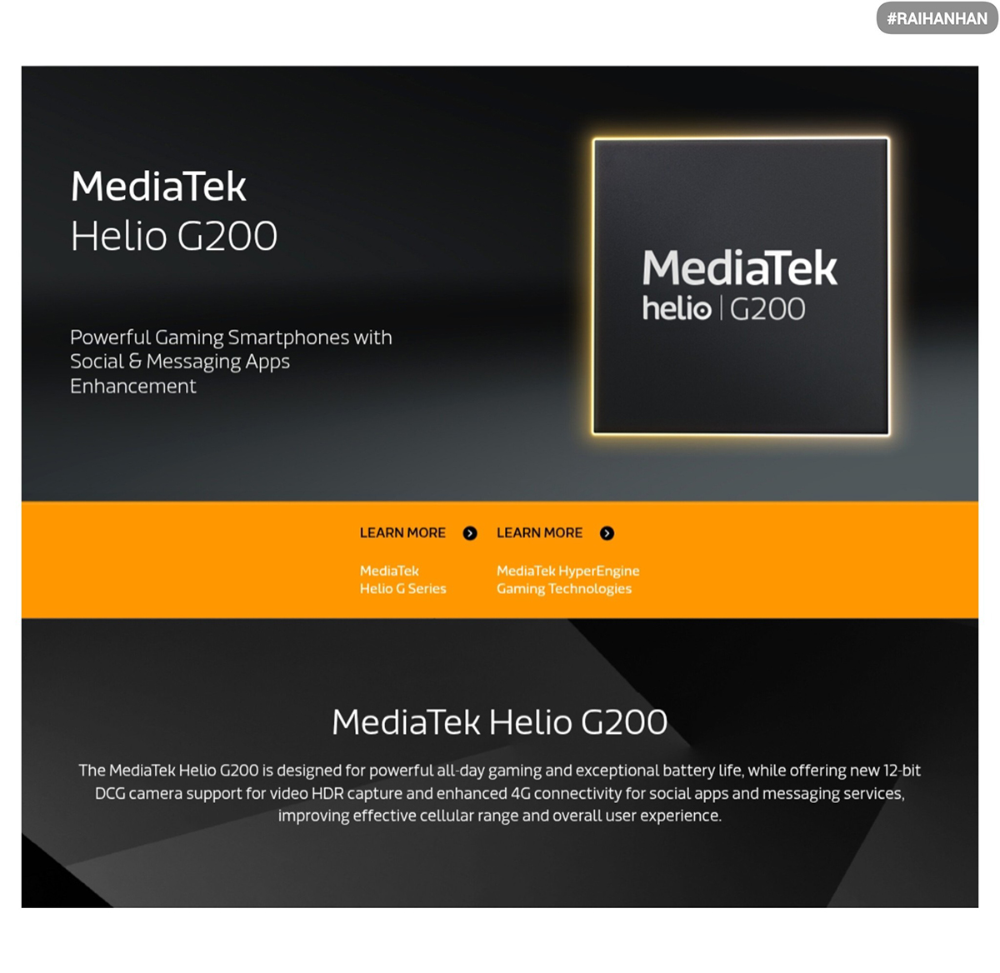

MediaTek Helio G200 ra mắt: Vẫn là công thức “bình mới rượu cũ”
Chipset Helio G200 mới ra mắt có thông số kỹ thuật không khác biệt so với SoC tiền nhiệm Helio G100
MediaTek dường như đã áp dụng một chiến lược quen thuộc cho các chip giá rẻ và tầm trung của mình: làm mới các bộ xử lý thế hệ trước bằng tên và thương hiệu mới. Một ví dụ là SoC Dimensity 6400 tầm trung mới nhất của hãng này có cấu hình và tính năng tương tự như Dimensity 6300 và thậm chí là phiên bản trước đó.
Công ty đang theo cùng một kịch bản với Helio G200, bộ xử lý di động mới nhất tập trung vào 4G. Trên lý thuyết, nó không khác nhiều so với Helio G100 trước đó. Phần lớn thông số kỹ thuật vẫn giữ nguyên, bao gồm CPU, lớp GPU và thậm chí cả khả năng hỗ trợ màn hình lẫn camera.
Cụ thể, Helio G200 vẫn sử dụng thiết lập 8 nhận gồm hai lõi Cortex-A76 và sáu lõi hiệu suất Cortex-A55, với cả hai đều có tốc độ xung nhịp giống hệt G100 ở mức tối đa là 2.2 GHz và 2.0 GHz. Nó vẫn sử dụng GPU Mali-G57, mặc dù MediaTek cho biết nó chạy nhanh hơn một chút ở mức 1.1 GHz. Hỗ trợ RAM và ROM cũng không thay đổi: RAM LPDDR4X lên đến 4266Mbps và bộ nhớ UFS 2.2.
Vì Helio G200 và Helio G100 có cấu hình gần như giống nhau nên MediTek đã không so sánh chúng trong sự kiện ra mắt. Thay vào đó, công ty cho biết Helio G200 cung cấp hiệu suất nhanh hơn 35% trong điểm chuẩn AnTuTu với một con chip đối thủ “không tên”. Nó cũng có điểm đơn lõi tốt hơn 40% và đa lõi mạnh hơn 20% trong Geekbench, hiệu suất GPU nhanh hơn 75% và hiệu suất năng lượng tăng 30% trong các tình huống chơi game.
Helio G200 cũng hỗ trợ cảm biến camera đơn 200MP, giảm nhiễu đa khung hình và tăng chuyển đổi kép 12 bit (DCG) cho video HDR. Nó có thể xử lý màn hình Full HD+ ở tốc độ làm mới 120Hz, được hỗ trợ bởi Intelligent Display Sync của MediaTek, điều chỉnh động tốc độ làm mới để tiết kiệm điện năng hơn.
hợp hỗ trợ 4G VoLTE kép, 4x4 MIMO, 256QAM và một số băng tần toàn cầu. Nó cũng bao gồm 4G DC SAR mới được cho là cải thiện hiệu suất ứng dụng mạng xã hội và nhắn tin ở những khu vực có tín hiệu yếu.
Ngày:10/05/2025